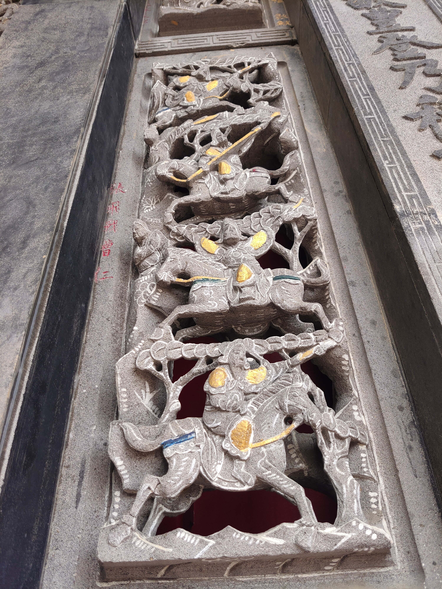

張飛戰曹仁
會說話的石頭

圖 張飛戰曹仁
漢獻帝建安七年（202年），夏侯惇率領曹軍與劉備軍戰於博望坡，之後兩軍撤退[1]。在白狼山之戰平定北方之後，208年，曹操親自率軍南下荊州。當年八月，荊州牧劉表病逝，次子劉琮即位後即不戰而降，駐紮在樊城的劉表客卿劉備聞訊向江陵（故楚郢都）撤退，同時通知關羽率水軍到江陵會合，民眾十餘萬隨行。江陵有劉表糧儲、器械，九月，曹操恐劉備據江陵軍實，與曹純領五千虎豹精騎急襲追擊，在當陽附近追上劉備軍。劉備軍被甲士兵少，一觸即潰，劉備被迫棄百姓逃走，令張飛率二十騎拒後，張飛以大喝嚇阻曹軍。同時趙雲負責護送劉備妻甘夫人和劉禪。戰鬥中兩名劉備之女被擄。戰後劉備放棄南下逃往江陵的計劃，轉為向東提早會合關羽水軍，一同逃往江夏和劉表長子劉琦會師。
資料來源： https://reurl.cc/2QDLKn